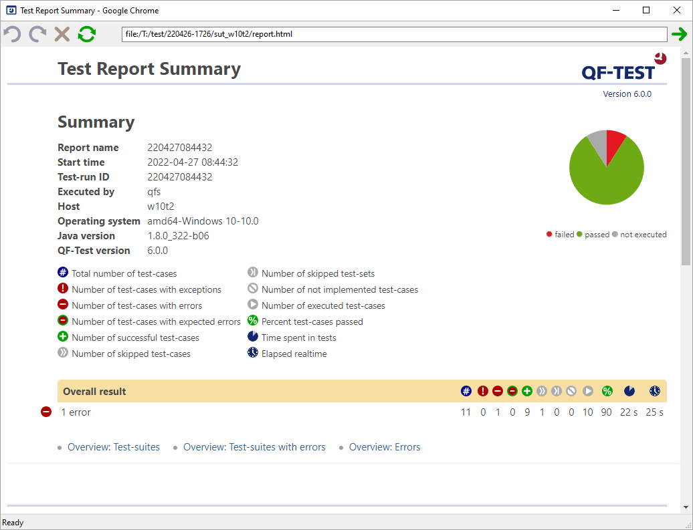

| Version 6.0.3 |
Besides test-suites and run-logs QF-Test can create a number of additional documents. Most important of these is the report, which summarizes the overall results of a test-run along with an overview over the test-suites executed and their individual results. The report is easy to read and understand without further knowledge about QF-Test and thus complements the run-log which is geared towards error analysis and requires some QF-Test experience to fully understand.
Following is an example of a report summary:
|
|  | ||
|
| Figure 21.1: Example report | ||
The other documents are more static in nature, describing the content of test-suites instead of test-run results. The testdoc document gives an overview over the structure of 'Test-set' and 'Test-case' nodes in a given set of test-suites. It is intended for the test architect or QA project manager and documents the current state of test development. The pkgdoc documentation is similar, but focuses on 'Package', 'Procedure' and 'Dependency' nodes instead. The result is a library reference comparable to Java's JavaDoc. The target audience for pgkdoc are test implementers requiring information about already existing procedures and their parameters.
Before we can start explaining how to create reports, some basic terms and concepts need to be defined.
A report represents the results of one or more test-runs. A test-run comprises the execution of either a single test-suite or multiple test-suites, typically executed together in one batch-run. A test-run is identified by a runid. It is possible to execute a test-run in several steps by assigning the same runid to the resulting run-logs.
A report is identified by a report name. For a report that covers a single test-run, the report name is usually the same as the runid. For reports summarizing the results of several test-runs a distinct report name can be specified.
Reports can be created in multiple variants: XML, HTML and JUnit. Most users will probably use the HTML variant which can be viewed in a browser, printed and archived. The XML variant can serve as the basis for collecting the results of a test-run for further processing, for example to collect test-results in a database or to create customized HTML reports. We suggest that you always create both HTML and XML reports unless you have a good reason to do otherwise. JUnit reports base on the JUnit XML format as created by Apache Ant by use of its JUnitReport task. This format is not as pretty and detailed as the first two report variants QF-Test offers but it is directly understood by many continuous integration tools and may prove useful for a quick integration with those.
A report consists of one summary document, plus one document per run-log. These files are collected together with complementary files like icons, stylesheets and screenshot images in a directory. At the file level, this directory represents the report.
The layout of the files inside the report directory depends on some command line options explained below. Basically there are two ways to lay out the files: Based on the file structure of the original test-suites or based on the file structure of the run-logs.
In advance to the overall test result, a report as shown above starts with a summary containing informational system data and a legend describing the meaning of counter icons used in the report (see Running tests).
NoteThe difference between "Time spent in tests" and "Elapsed time" are explicit delays introduced in nodes via the 'Delay before/after' attribute or user interrupts.
The contents of a report are based on the original structure of the executed test-suites. The main structure is created from 'Test-set' and 'Test-case' nodes. The 'Comment' attributes of the root node as well as the 'Test-set' and 'Test-case' nodes share the doctags with testdoc documents as explained in section 21.2. In addition to those doctags the '@title' doctag can be specified in the comment of the root node to set a title for the report document created for the respective test-suite.
If -report-teststeps is specified in batch mode (true by default) or the
respective option is active in the interactive dialog, 'Test-cases' can be further broken
down into steps with the help of 'Test-step' nodes. In addition to explicitly
wrapping steps into a 'Test-step', any node can be turned into a test-step by specifying
the doctag '@teststep' in its 'Comment', followed by an optional name for the step.
For 'Test-step' nodes the '@author', '@version' and '@since' doctags are also applicable.
The names, comments and tag values of the various nodes can contain variables that will
be expanded at execution time so that the expanded value is shown in the report. This is
especially useful for test-steps within a procedure.
If listing of test-steps is active, 'Setup', 'Cleanup' and 'Dependency' nodes are also listed and checks, screenshots and messages, including warnings, errors and exceptions are properly integrated into the nested steps. If the test-suites are set up properly the resulting report can serve as a very readable summary of what was going on during the execution of a test.
Whether warnings and checks are listed is determined by the command line arguments
-report-warnings and -report-checks or the respective interactive
options. Warnings from component recognition are never listed because they are too
technical and could easily flood the report. For checks one must distinguish between
checks that represent an actual verification step and those that are used solely for
control flow, for example to check whether a checkbox is already selected and click it
only in case it is not. By default QF-Test lists those 'Check' nodes in the report that
have the default result settings, i.e. the 'Error level of message' is 'Error', no exception is
thrown and no result variable bound. All others are treated as helpers for control flow
and not listed in the report. For cases where this default treatment is not appropriate,
you can force a 'Check' into the report via the doctag '@report' in its 'Comment'
attribute or prevent its listing via '@noreport'. Of course failed checks are treated as
warnings, errors or exceptions (depending on their 'Error level of message') and cannot be excluded
from the report if messages at the respective level are shown.
Additional messages, checks and screenshots can be added to the report by scripts via
the methods rc.logMessage, rc.logImage and
rc.check and its variants, which have an optional report
parameter. For details, please see the run-context API documentation in section 46.5.
There are three ways to create reports:
The interactive variant is easy to use. Just select the target directory for the report and whether you want the XML and/or the HTML variant.
For report creation in batch mode there are a number of command line options which are listed and explained in section 40.2. Let's look at the variant of creating reports as the result of a test-run first:
The command line syntax for plain test-execution in batch mode is
qftest -batch <test-suite> [<test-suite>...]
To create a combined XML and HTML report, use -report <directory>. To create only one
version or to separate the XML, HTML variants, use -report-xml <directory> and/or
-report-html <directory>. For JUnit reports -report-junit <directory> works respectively.
The runid of a test-run is specified with -runid <ID>, the name of the report with
-report-name <name>. If the report name is unspecified it will default to the runid.
To lay out the files in the report directory according to the file structure of the
test-suites, use -sourcedir <directory>. To use the file structure of the run-log as the
basis, use -runlogdir <directory>.
The following is a typical example of a command line for a batch run making use of the placeholders explained in subsection 40.2.4:
|
|
|
|||
|
| Example 21.1: Creating a report as the result of a test-run | |||
Creating a report as a separate step by transforming a set of run-logs is similar in
many respects. The run-logs to transform have to be specified instead of the test-suites
to execute and the -runid <ID> and -sourcedir <directory> command line options have no effect.
The following is an example for how to create a weekly summary report based on the
assumption that you have collected all run-logs below the directory named
logdir, possibly in subdirectorys thereof:
|
|
|
|||
|
| Example 21.2: Creating a weekly summary report | |||
The XML and HTML reports are created from the run-log via XSLT. By changing the XSLT stylesheets used it is possible to change the content and structure of the resulting documents.
You can find more on this possibility in our blog article "Creating custom HTML/XML/Junit reports" at https://www.qfs.de/en/blog/article/2019/02/28/creating-custom-htmlxmljunit-reports.html
As an alternative it is possible to customize the display of the HTML report using established web
techniques via JavaScript. A file named user.js is copied to the report directory and
included in all pages of the HTML report. To change the report layout you can replace this file with your
own version after creating the report. See the comments in the default user.js file for
examples.
The type of test documents called testdoc provide overview and detailed
information over the 'Test-set' and 'Test-case' nodes of one or more test-suites.
When 'Test-cases' contain 'Test-steps' those steps will be included in the testdoc.
By default QF-Test ignores 'Test call' nodes during testdoc creation. By setting the option -testdoc-followcalls=true
the real targets 'Test-case', 'Test-set' or the whole test-suite are processed as if they were part
of the original test-suite.
This documentation is a valuable tool for QA project managers to keep track of the current state of test development. Similar to reports, testdoc documents are laid out as directories with one summary file and one detailed file per test-suite.
A testdoc document for a single suite can be created interactively from a test-suite by selecting »Create testdoc documentation...« from the »File« menu. This is very useful during test development to quickly check whether all tests are properly documented.
For actual use as a reference it is preferable to create complete sets of documents
spanning multiple test-suites for a whole project. This can be done by running QF-Test in
batch mode with the -gendoc command line argument. In its simplest form, a call to
create testdoc documentation for a whole directory tree would look as follows:
|
|
|
|||
|
| Example 21.3: Creating testdoc documentation | |||
Please see chapter 40 for detailed information about the available command line arguments.
To get optimal results you can use HTML markup in the 'Comment' attributes of 'Test-set' and 'Test-case' nodes and also make use of doctags. A doctag is a keyword beginning with '@', sometimes followed by a name and always by a description. This is a proven concept in JavaDoc, the standard documentation format for Java programs (see http://www.oracle.com/technetwork/java/javase/documentation/index-137868.html#tag).
Note All doctags must appear after the main description. Description after the doctags will be ignored, as well doctags inside the descripiton are not allowed.
The following doctags are supported for 'Test-set' and 'Test-case' nodes:
In addition to the doctags described above, the doctag '@title' in the comment of the root node can be used to specify a title for the testdoc document created for the respective test-suite.
The concepts of and methods for creation of pkgdoc documents are nearly identical to testdoc, so this section is brief. Instead of 'Test-set' and 'Test-case' nodes, pkgdoc documents cover 'Package', 'Procedure' and 'Dependency' nodes. They are intended for the test developer to keep track of the procedures available for use in implementing tests.
Please refer to the standard library
qfs.qft as a good example how a pkgdoc may look like.
A pkgdoc document can also either be created interactively using »File«-»Create HMTL/XML pkgdoc...« or in batch mode. Again, please see chapter 40 for detailed information about the available command line arguments.
As the following example shows, testdoc and pkgdoc can even be created together in a single batch run:
|
|
|
|||
|
| Example 21.4: Creating testdoc and pkgdoc documentation in a single run | |||
Of course pkgdoc also supports HTML markup and doctags. The following doctags are supported for 'Package', 'Procedure' and 'Dependency' nodes:
In addition to the doctags described above, the doctag '@title' in the comment of the root node can be used to specify a title for the pkgdoc document created for the respective test-suite.
| Last update: 9/6/2022 Copyright © 1999-2022 Quality First Software GmbH |